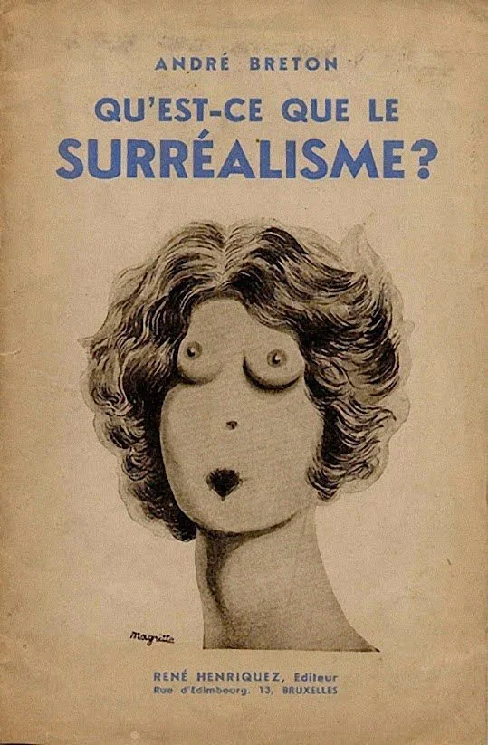
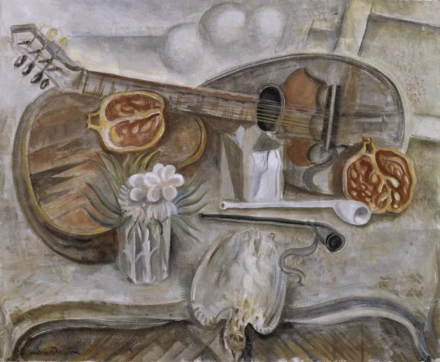
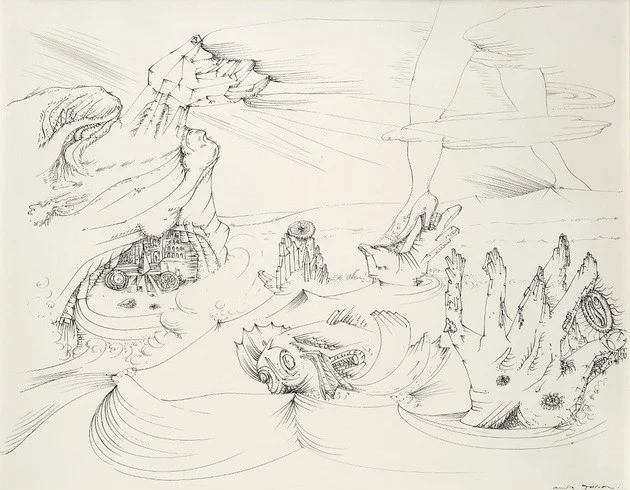
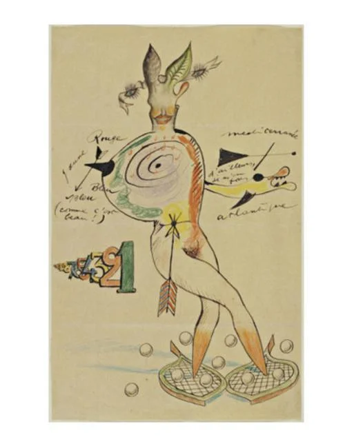
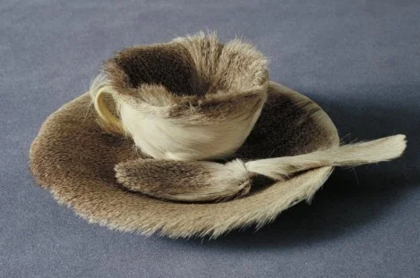

En 1924, en París, André Breton (1896-1966), escritor y poeta francés, escribió un manifiesto después de cortar relaciones con Tristan Tzara, líder del movimiento dadaísta, y así nace el Surrealismo, al que muchos consideran la última de las grandes vanguardias.
Manifiesto
Manifiesto Surrealista - André Breton - 1924
Portada: versión de Le Viol - óleo sobre tela, 1934 - René Magritte, MoMa, NY
El surrealismo emerge en París en 1924. Se esparce por Europa a pocos años de concluida la I Guerra Mundial hasta la llegada de la II guerra Mundial. Por ende, la influencia de este movimiento ha llegado hasta nuestros días.
Es cierto que el término surrealismo está asociado a André Breton y su manifiesto, pero fue usado por primera vez por Guillaume Apollinaire (1880-1918), escritor y crítico de arte francés, en el prólogo de su pieza Las tetas de Tiresias escrito en 1917.
El inconsciente y el automatismo
Le Guéridon dans l'atelier Mesa de pedestal en el estudio - óleo sobre tela, 1922 - André Masson (1896-1987, pintor, escultor, ilustrador, diseñador y escritor francés), Tate, UK El manifiesto de Breton está inspirado en el libro de Freud La interpretación de los sueños, en el que el autor explora la idea de que la mente humana posee un nivel oculto llamado inconsciente, es decir aquelo de lo que la mayor parte del tiempo las personas no tienen conciencia, como la palabra lo indica.
El Surrealismo pretendía superar esta limitación del inconsciente, permitiendo que el subconsciente se expresase a través del arte.
De esa forma el automatismo se convirtió en una de las características del Surrealismo, en defensa de la expresión artística sin límites y sin el control de la razón. Para lograr este objetivo, los artistas llegaron a elaborar obras en estados de trance e hipnosis.
La mer se retire (O mar se retira) 1941 - André Masson Ejemplo de automatismo: La mer se retire (El mar se retira) 1941 - André Masson
En la práctica, el automatismo consistía en trasponer en papel, lienzo o cualquier otro soporte de expresión artística, un pensamiento o sueño directamente del subconsciente, sin ejercer control estético o moral.
El objetivo era que la creación artística se automatizara (automatismo) tal como es automática la respiración o la acción del pestañeo. Era así un intento de protesta contra las normas establecidas, tanto en el arte como en el ámbito social.
Los surrealistas creían que la creatividad que nacía del subconsciente de un artista era más auténtica y poderosa que la derivada de la consciencia. También estaban interesados en explorar el lenguaje de los sueños que creían que revelaba los sentimientos y deseos ocultos.
De una forma general, se puede decir que la idea era lograr la mayor espontaneidad posible, algo que se reveló más o menos fácilmente en el dibujo y la escritura, pero no tanto así en la pintura, pues esta es una disciplina muy compleja que no permite tanta espontaneidad.
Ejemplo de la técnica frottage: L'Évadé (o Fugitivo) 1926 - Max Ernst El automatismo no siempre funcionaba bien en otras formas de expresión artística, así que otras técnicas fueron usadas para alcanzar la anhelada espontaneidad de creación.
Una de estas técnicas fue el frottage, que consistía en pasar un lápiz, por ejemplo, sobre una superficie rugosa, creando así formas y texturas en el soporte para crear una obra nueva a partir de ese material.
Otro ejemplo es la decalcomanía, una técnica en la cual cierta cantidad de tinta es arrojada contra un lienzo o papel. Esta superficie se dobla por la mitad y al abrirla nuevamente, muestra un patrón de tinta que sirve de material para crear una obra gracias a lo que provoca al nivel subconsciente.
Otras formas de expresión artística fueron usadas y experimentadas, siempre en un esfuerzo por explorar al máximo la libertad creativa.
artistas Yves Tanguy, Joan Miró, Max Morise e Man Ray Ejemplo de un "cadáver exquisito": original de los artistas Yves Tanguy, Joan Miró, Max Morise y Man Ray
El cadáver exquisito fue un proceso creativo basado en un juego, en el cual diferentes artistas creaban dibujos o poemas en conjunto. Sin ver lo que el otro hacía, la obra iba pasando de uno en uno y cada artista iba añadiendo un trozo nuevo o palabra nueva. Al terminar. se desplegaba el papel y compartían el resultado en busca de ideas novedosas.
Otro proceso de construcción artística alternativo fue el “objet trouvé” (objeto encontrado), inventado por Marcel Duchamp (1887-1968). Duchamp fue un pintor, escultor y poeta francés, una de las principales figuras del Dadaísmo.
Téléphone-Homard
Ejemplo de "object trouvé": Téléphone-Homard (Teléfono-lagosta) - metal, yeso, goma, resina y papel, 1936 - Salvador Dalí, MoMa, NY A esa premisa se le sumó el toque del absurdo, es decir, la superposición de lo improbable y extraño, como el caso de la obra que enlaza una langosta a un teléfono, o el caso de Meret Oppenheim que cubrió una taza y una cuchara con pelo.
Object (objeto) 1936 - Meret Oppenheim (1913-1985, artista plástica e fotógrafa suiça), MoMa, NY Object (objeto) 1936 - Meret Oppenheim (1913-1985, artista plástico y fotógrafa suiza), MoMa, NY Esta forma de construcción artística relacionaba objetos cotidianos que normalmente no tienen nada que ver el uno con el otro, lo que provoca una perturbación del sentido y de esa forma, estimula el inconsciente. Se trataba de la yuxtaposición entre lo familiar (el objeto común) y lo improbable y absurdo, el escenario impuesto al objeto.
Los artistas del surrealismo frecuentemente incorporaban también las imágenes y objetos de otras culturas, sobre todo de las primitivas. Esta actitud tenía, sobre todo, intenciones anti-colonialistas y anti-racistas.
Vea también
El jardín de las delicias de El Bosco Movimientos artísticos del siglo XX Principales artistas y obras Max Ernst
Les Hommes n'en sauront rien Les Hommes n'en sauront rien (Los hombres que no saben nada) - óleo sobre tela, 1923 - Max Ernst, Tate, UK Max Ernst (1891, Brühl, Alemania - 1976, París, Francia) fue uno de los pioneros del Dadaísmo y luego se incorporó al Surrealismo, destacando en la pintura y en la poesía.
Aún en Alemania, Ernst participó activamente en la I Guerra Mundial, hecho que dejó marcas profundas en él y, eventualmente, influenció su trabajo como artista. Haber estado expuesto a los horrores de la Gran Guerra hizo que se posicionara en contra de la sociedad y los valores de la época con mayor vehemencia.
La virgen
La Virgen bendecida castigando al Niño Jesús delante de tres testigos: Andre Breton, Paul Eluard y el Pintor - óleo sobre tela, 1926 - Max Ernst, Museum Ludwig, Köln, Alemanha Su obra se caracteriza sobre todo por la exploración de lo absurdo, la construcción de escenarios fantásticos y el mundo de los sueños. A lo largo de su vida artística experimentó con varias técnicas como el collage y el frottage, y estuvo bastante influenciado por el arte de las tribus nativas americanas.
Salvador Dalí La persistencia de la memoria La persistencia de la memoria - Óleo sobre tela, 1931 - Salvador Dalí, MoMa, NY Salvador Dalí (1904-1989, Figueres, España) es el más famoso de los surrealistas y su nombre pasó a ser, con el tiempo, sinónimo del movimiento. Esto ocurrió a pesar de que, alrededor de 1937 y como consecuencia de la transformación de su estilo y de sus posiciones políticas, Breton lo expulsara del Surrealismo. Por ende, Dalí es el más controversial.
En su obra es muy notoria la influencia del imaginario onírico, es decir, del mundo de los sueños. Su expresión artística fue hecha fundamentalmente a través de la pintura y de la escultura, pero a lo largo de su vida también utilizó otras formas y técnicas.
Inclusive, dejó huella en el cine, dada su colaboración con dos películas del director español Luis Buñuel (1900-1983): Un perro andaluz (1929) y La edad de oro (1930).
Más sobre La persistencia de la memoria de Salvador Dalí
Dali Jirafa en llamas Jirafa en llamas - Óleo sobre madera, 1937 - Salvador Dalí, Kunstmuseum Basel, Basilea, Suiza Además de ser un artista revolucionario en su tiempo, Dalí fue también un genio a la hora de auto-promocionarse y fue un verdadero hombre del espectáculo.
Sus obras rondan tres temas principales: el universo y las sensaciones del ser humano, la simbología sexual u las imágenes ideográficas. La mayoría de su trabajo consiste en la representación secuencial de un sueño, algo que logró ejercitando su mente para acceder al subconsciente y tomar de allí su inspiración.
Para Dalí los sueños y la imaginación eran fundamentales en el proceso creativo, y defendía también una variante del automatismo, una especie de paranoia. En este proceso de paranoia, el artista debía embarcarse en un estado de alucinación para crear, dando momentáneamente un alto a su racionalidad a pesar de estar consciente en cierto grado.
Joan Miró Joan Miro El cazador (Paisaje catalán). Óleo sobre tela, 1924 - Joan Miró, MoMa, NY Joan Miró (1893, Barcelona - 1983, Palma de Mallorca, España) es uno de los artistas más influyentes del siglo XX. Las obras más conocidas del artista son sus pinturas, aunque también creó como escultor, diseñador, ceramista, etc.
Así como otros artistas, Miró pasó por varios movimientos, se dejó influenciar por ellos y también dejó su marca. Comenzó, de hecho, por el Fauvismo, pasó luego al Dadaísmo y de este al Surrealismo y al Abstraccionismo.
El carnaval del arlequín El carnaval del arquelín. óleo sobre tela, 1925 - Joan Miró, Albright-Knox Art Gallery, Buffalo, US En su vida artística practicó el automatismo y en la pintura procuró alejarse lo más posible de las convenciones como una forma de reaccionar en contra de los principios burgueses instituidos.
Sus primeras pinturas representan sobre todo formas biomórficas sin contraste. Temáticamente son composiciones que remiten al cruce entre el mundo fantasmagórico y el de los sueños. Con sus innovadoras composiciones, Miró influenció a sus contemporáneos así como a innumerables generaciones posteriores.
René Magritte Los amantes Los amantes. Óleo sobre tela, 1928 - René Magritte, MoMa, NY René Magritte (1898, Lessines, Bélgica - 1967, Bruxelas, Bélgica) fue un artista belga y uno de los nombres del surrealismo más aclamados internacionalmente, a pesar de que su fama llegaría apenas alrededor de los años 50.
Aunque es uno de los artistas que más se asocian al Surrealismo, las obras de Magritte se distancian del ilusionismo de Dalí y del automatismo de Miró.
Para Magritte, lo importante no era tanto lo que la obra mostraba, sino aquello que ocultaba, es decir, las segundas intenciones de fondo. Para él lo importante era representar el misterio, y así muchas de sus composiciones pictóricas presentarían figuras humanas con la cara tapada con un velo, dejando al espectador en la eterna curiosidad e insatisfacción por no poder nunca revelar lo que se oculta tras este.
Pipa Esto no es una pipa. Óleo sobre tela, 1929 - René Magritte, LACMA, LA Durante su vida artística, Magritte recurrió varias veces al mismo tema y también utilizó obras famosas de otros artistas para crear versiones surrealistas.
El humor también representó una parte importante en su obra, y un ejemplo de eso es La traición de las imágenes, en la que se representa una pipa perfectamente pintada con una inscripción en el lienzo que dice: “Esto no es una pipa”.
En realidad, se puede argumentar que ni la imagen ni la palabra, a la que describe negativamente, son una pipa. Ellas son apenas la representación abstracta de un objeto que se encuentra ausente. Así, de forma aparentemente simple, Magritte obliga al espectador a pensar y cuestionar. De hecho, el propio artista no se consideraba un pintor, sino un pensador que se expresaba en imágenes.
https://www.culturagenial.com/es/surrealismo/